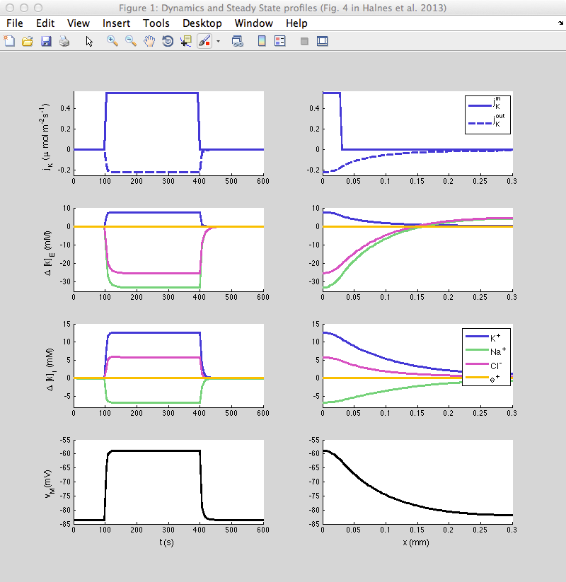

Matlab files for the model used in the paper: Halnes G., Ostby, I., Pettersen, KH., Omholt, S. & Einevoll, GT. (2013) Electrodiffusive model for astrocytic and neuronal ion concentration dynamics. PLoS Comp. Biol. 9(12): e1003386 In Halnes et al. 2013, an electrodiffusive formalism was developed for computing the dynamics of the membrane potential and ion concentrations in the intra- and extracellular space in a one-dimensional geometry (cable). This (general) formalism was implemented in a model of astrocytes exchanging K+, Na+ and Cl- ions with the extracellular space (ECS). In a limited region (0<x<l/10 where l is the astrocyte length), the ECS was exposed to an increase in the local K+ concentration. Simulations were run to explore how the astrocyte contributed in transporting K+ out from the high-concentration region via a mechanism known as spatial buffering, which involves local uptake from high concentration regions, intracellular transport, and release of K+ in regions with lower ECS concentrations. The Matlab-files represent the astrocyte/ECS model, and reproduce three of the figures (figures 4, 5 and 6) from Halnes et al. 2013. Note the matlab titlebar figure numbers are different than the paper figure numbers: Figure 4:  Figure 5: Figure 6: We refer to the paper for more details. The model files were supplied by Geir Halnes